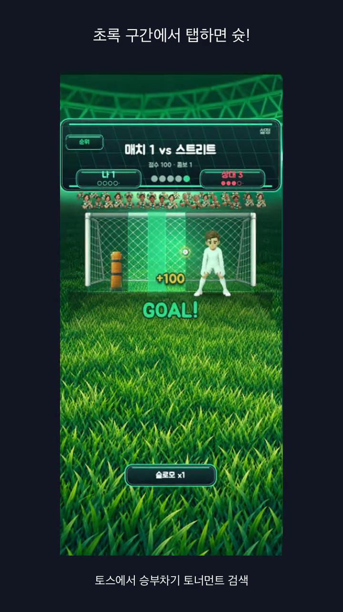

승부차기 토너먼트
한 번의 탭,
몇 골까지?
게이지가 움직여요. 초록 구간에 맞춰 탭하고,
골키퍼를 넘어 나의 골 기록에 도전해보세요.
토스 앱에서 승부차기 토너먼트를 검색해도 찾을 수 있어요.

첫 골은 이렇게 도전해요
- 움직이는 게이지를 봐요. 초록 구간에 들어오는 순간을 기다려요.
- 한 번 탭해 슛! 득점과 남은 슛을 확인하며 다음 공에 도전해요.
- 내 기록을 넘어봐요. 토스에서는 오늘의 도전과 연속 참여 보상도 확인할 수 있어요.
플랫폼마다 제공되는 기능과 진행 기록은 다를 수 있어요.
내일도 골 기록에 도전해요
토스의 오늘의 도전에 다시 참여하고 싶다면, 내일 오전 9시(한국 시간)를 캘린더에 남겨보세요.
Google 캘린더에 추가일정 파일을 저장한 뒤 캘린더로 열어 추가해요. 알림 여부와 시간은 캘린더에서 직접 선택할 수 있어요.
친구도 몇 골 넣을까요?
이 페이지를 공유하고 각자의 골 기록을 비교해보세요.